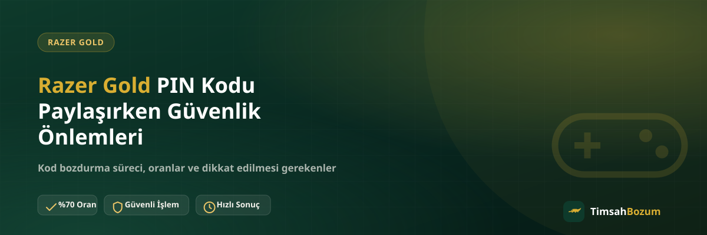

Razer Gold PIN kodu, tek kullanımlık ve değeri koda bağlı bir bilgi olduğu için elden ele ya da ekrandan ekrana paylaşılırken bazı noktalara dikkat etmek gerekiyor. Kodu kimle, nasıl ve hangi kanaldan paylaştığın, işlemin sorunsuz ilerlemesi kadar kodun başka birinin eline geçmemesi için de önemli. Bu yazıda PIN kodu paylaşımında dikkat edilmesi gereken güvenlik adımlarını topladık.
Razer Gold PIN Kodu Paylaşımında Güvenlik Neden Önemli?
Razer Gold kodu, bakiye gibi geri alınabilen bir değer değil; tek kullanımlık bir karakter dizisi. Kodu gören ve kullanan kişi, kodun değerine sahip olur. Bu yüzden kodu yanlış kişiyle paylaşmak ya da güvenilir olmayan bir kanaldan iletmek, kodu tamamen kaybetmene yol açabilir. Bozum işlemi için kod paylaşımı gerekli olsa da, bunu nereye ve nasıl yaptığın bu riski ortadan kaldırır veya büyütür.
Razer Gold PIN Kodunu Kimlerle Paylaşmalısın?
Kodunu yalnızca işlemi gerçekten yürüten, doğrulanmış bir hatta paylaşmalısın. TimsahBozum için bu, sitede ve sosyal medya hesaplarında yayınlanan resmi WhatsApp hattıdır: +90 543 887 21 71. Arkadaşından gelen bir "bu numaradan da işlem yapılıyor" yönlendirmesini doğrulamadan kabul etme; numarayı her zaman resmi kaynaktan teyit et. Instagram DM'i, farklı bir telefon numarası veya bilmediğin bir sohbet uygulaması üzerinden kod paylaşımı yapılmaz.
Sahte WhatsApp Hatları Nasıl Ayırt Edilir?
Dolandırıcılar bazen gerçek markaların profil fotoğrafını ve adını kopyalayarak sahte bir hat oluşturabilir. Bir numaranın resmi olup olmadığını anlamanın en güvenli yolu, o numarayı doğrudan sitedeki veya resmi sosyal medya hesaplarındaki bilgiyle karşılaştırmaktır. Üçüncü bir kişinin sana ilettiği, "bu hat da çalışıyor" dediği bir numarayı kullanmadan önce mutlaka bu karşılaştırmayı yap.
Kod Paylaşırken Hangi Bilgiler İstenir?
İşlem için senden istenen tek şey Razer Gold kodunun kendisidir; kodun tam karakterlerini net ve eksiksiz şekilde iletmen süreci hızlandırır. Kod dışında üyelik bilgisi, kimlik belgesi, hesap şifresi veya Razer hesabına erişim istenmez. Senden böyle bir bilgi talep edildiğini görürsen, bu resmi süreç dışında bir talep olduğunu bilmelisin.
SMS Doğrulama Kodu İstenirse Ne Yapmalısın?
Bozum işleminin hiçbir aşamasında sana ayrıca bir SMS doğrulama kodu sorulmaz; Razer Gold PIN kodunun kendisi dışında herhangi bir doğrulama kodu paylaşman beklenmez. Böyle bir talep gelirse işlemi durdur, çünkü bu talep seni dolandırmaya yönelik bir girişim olabilir ve bozum sürecinin normal akışında yer almaz.
Kodun Ekran Görüntüsü mü Yazılı Hali mi Daha Güvenli?
Kodu doğrudan yazılı olarak paylaşmak ya da kodu net gösteren bir ekran görüntüsü göndermek, ikisi de kabul edilen yöntemlerdir. Önemli olan, kodun tüm karakterlerinin okunaklı ve eksiksiz görünmesi. Ekran görüntüsünde kodun kesilmediğinden, bulanık çıkmadığından emin olmak, karşı tarafın kodu tekrar sormasını önler ve işlemi hızlandırır.
Paylaşım Sonrası Koduna Ne Olur?
Kod paylaşıldıktan ve oran teyit edildikten sonra kodun tam değeri üzerinden değerlendirilir; Razer Gold kod tabanlı bir hizmet olduğu için kısmi bozum söz konusu değildir. Bu noktadan sonra kodu başka bir yerde kullanmaya çalışmamalısın, çünkü aynı kod iki kere değerlendirilemez. İşlemden önce kodu kendi hesabına yüklediysen bu durumu paylaşırken belirtmen, sürecin doğru ilerlemesine yardımcı olur.
Kod paylaşımıyla ilgili güvenlik kurallarını uyguladıktan sonra süreç basit ilerler: oranı teyit edersin, ödemeni WhatsApp üzerinden görüşülen yöntemle alırsın. Güncel oranı ve adımları Razer Gold bozdurma sayfamızdan da görebilirsin.
Çalışma Saatleri Güvenliği Nasıl Etkiler?
TimsahBozum her gün 10:00 ile 03:00 arası aktif. Bu saatler dışında acil görünen bir mesaj alırsan ve bu mesaj seni hemen kod paylaşmaya yönlendiriyorsa temkinli ol; resmi hat, mesai saatleri dışında da olsa her zaman aynı doğrulama adımlarını izler, aceleye getirmez. Gece yarısı "hemen paylaşmazsan oran düşer" gibi bir baskı hissettiğin bir mesaj, dikkatli olman gereken bir işarettir.
PIN Kodunu Birden Fazla Kişiyle Paylaşırsan Ne Olur?
Aynı Razer Gold kodunu aynı anda birden fazla platforma veya kişiye göndermek güvenlik açısından risklidir, çünkü kod kimin elindeyse önce o kullanır. İki farklı bozum sitesine veya iki farklı kişiye aynı kodu "hangisi daha hızlı yanıtlar" diye paylaşmak, kodunu kaybetme riskini artırır. Kodu tek bir güvenilir kanala, teyit alana kadar bekleterek paylaşmak daha güvenlidir.
Güvenlik İçin İşlem Öncesi Kısa Kontrol Listesi
Kod paylaşımına geçmeden önce üç şeyi kontrol etmek işini kolaylaştırır: yazdığın numaranın resmi kaynaktaki numarayla aynı olduğundan, kodun önceden kullanılmadığından ve kodu yalnızca bir kanalda paylaştığından emin ol. Bu üç kontrolü atlamadan ilerlediğinde, hem işlemin hızlanır hem de kod kaybı riskiyle karşılaşma ihtimalin düşer.
Kodu Hesabına Yükledikten Sonra Bozdurabilir misin?
Bazı kullanıcılar kodu önce kendi Razer hesabına yükleyip ardından bozdurmak isteyip isteyemeyeceğini sorar. Kod bir kez hesaba yüklendiğinde oyun platformunda bakiye haline gelir ve bu bakiye artık dışarıya bozum olarak değerlendirilemez. Bu yüzden kodu bozdurmayı düşünüyorsan, önce hesabına yüklemeden kodu paylaşman daha doğru bir sıralamadır.
Sık sorulan sorular
İlgili Yazılar
- Razer Gold Kodunu Güvenle Bozdurmanın Yolları
- Razer Gold Kodu Bozdurmadan Önce Bilmen Gereken 5 Şey
- Forumlardaki Razer Gold Bozum İlanları Güvenilir mi?
Razer Gold PIN kodunu güvenle bozdurmak istiyorsan, kodunu yalnızca resmi WhatsApp hattımızdan paylaş ve oranı teyit ettikten sonra işlemini tamamla. Sorularını WhatsApp hattımıza yazarak sorabilirsin.